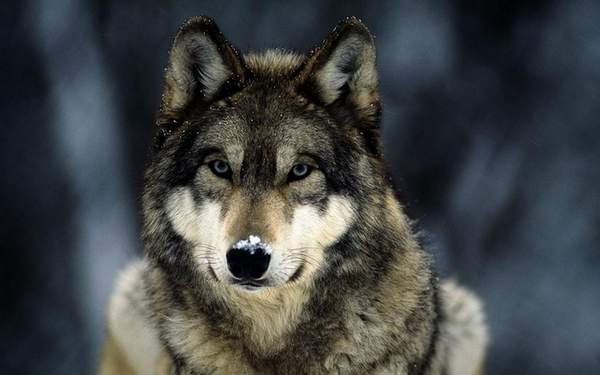

Смерека один из видов ёлки — коренная ель Карпат. Это очень
красивое дерево имеет необыкновенное «дыхание» — убивает всех
микробов вокруг себя и таким образом, просто сидеть под Елью —
хорошо для вашего здоровья. Всякий раз, возвращаясь в Карпаты,
возле смереки, вы чувствуете себя физически и эмоционально, лучше,
чем где-либо ещё. Смереки выглядят чёрными среди зелёных буков.
Без этих пирамидальных деревьев, карпатские горы потеряют своё
магическое очарование.
Большинство
деревьев в Карпатах хвойные, но смерека самая заметная и
величественная из них. Более 60 процентов лесов в этой области
являются хвойными, с тёмно-зелеными пышными лесами смереки.
«Смэрэка» русских аналогов этому слову нет.
Несмотря на то, что волк считается кровожадным животным,
он играет очень важную роль в регулировании экологических связей.
Волк – чудесный охотник. С помощью очень сильных челюстей и крепких
больших клыков волк может убивать даже таких больших животных как
лось или конь. Сильные ноги дают ему возможность пробегать по много
километров в день. При этом он может долго обходится без еды, не слабея.
Зимой в лесной зоне волк тесно связан с человеком: поскольку ему тяжело
передвигаться по глубокому снегу, он активно использует дороги и человеческие тропы, лыжню.

В основе питания волка разные большие и маленькие животные, птицы. Особенно любит копытных животных.
Растительную пищу волки также любят – едят ягоды, спелые арбузы, а также с удовольствием потребляет
насекомых и грызунов. Очень часто нападает на домашний скот из-за его доступности. Опасен также,
как носитель паразитических червей, в том числе бешенства.
Карпаты делятся на Западные, Восточные и Южные. Западные - расположены на территории Словакии,
Чехии, Польши и частично Венгрии, где расположена наивысшая точка Карпат - гора Герлах (2655 м).
Южные - расположены на территории Румынии. Восточные (за исключением Восточных Бескид, что в
Словакии и Польше, а также Семиградских гор, в Румынии) - на территории Украины.
Преобладающие высоты Карпат 800 - 1200 м. Наивысшая вершина
Карпат - Герлаховски Штит, 2655 м (принадлежит массиву Татры в Словакии). На Украинские Карпаты
приходится 10,3% площади всех Карпат, высшая точка - гора Говерла, 2061 м.